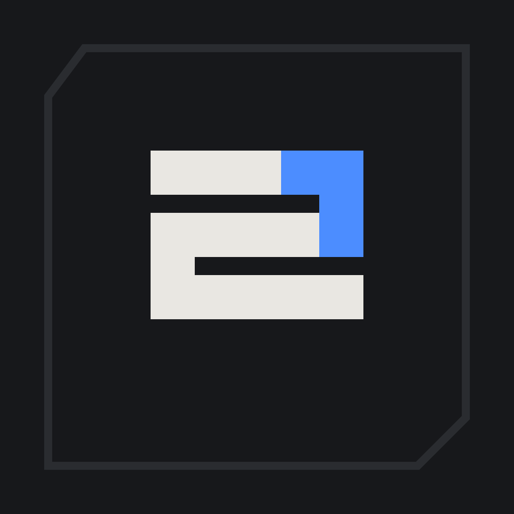
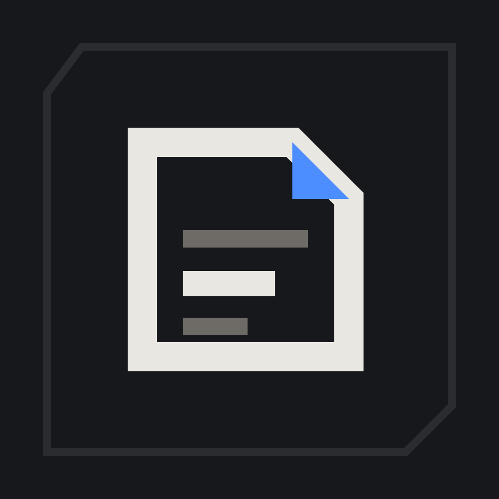
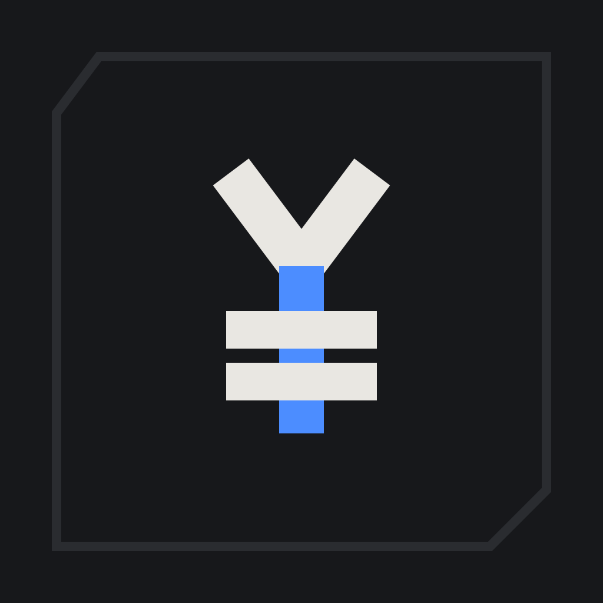

这是**方向草图**，不是成品美术：真正的字形需要你在选定方向后由我重画一版精修路径。
三个候选共用同一套「折角」记号（与你 SuenMusic 的实心折角 S 同语言），差别只在**用什么符号承载它**。
全部为手写矢量路径（viewBox 1024，零位图嵌入），1024 / 256 / 64 / 32 / 16 全是同一份几何。

与 SuenMusic 同一剪影，只把「段 0」从琥珀换成账目蓝。
优点：两个产品并排就能看出是一家；用户已经认识这个形状。
代价：两个 App 图标在任务栏里容易认错（尤其小尺寸）。
适合：你打算把 suenmusic / suenmoney / suenweb 做成一个品牌家族。

一页被折起一角的账纸，折角用的就是 S 的 45° 切角。
优点：语义直给「这是记账」，且与 S 共享几何语言 —— 家族感来自形状而不是字母；两个产品不会认错。
代价：折页是常见母题，需要靠折角锐度和三条账线的疏密做出辨识度。
适合：想让记账 App 一打眼就是记账。

切角方框里的 ¥，竖笔用账目蓝。
优点：16px 也读得出来；在通知栏、账单列表、分享图里都不会糊。
代价：最不像「你家的产品」（更像银行/理财），家族感最弱。
适合：你更看重「货币属性一眼可见」而不是品牌家族。
看这三组只需要回答一个问题：把 16px 那格眯眼看，还能不能认出是哪一版。 A 在 16px 会退化成一块白色折线（因为 S 的三条横带在小尺寸糊在一起）； B 的折角在 16px 仍然成立；C 的 ¥ 最稳。
SuenMoney · 流水
单色状态是很多设计的死因：带底板 + 双色的标记，去色后经常只剩一团灰。 上表里能把「折角」读出来的才算过关 —— 这也是为什么我建议底板只做蚀刻线而不做色块。
这一排是这次决策的核心问题：你要的是「同一个家族的第二个产品」，还是「一个独立产品」？
要家族 → A（或 B，靠共同的 45° 折角）。
要独立 → C。
我倾向 B：家族感来自「折角 + 蚀刻边 + 深哑光底」这套记号，而不是复用同一个字母 ——
字母复用会让两个 App 在任务栏互换身份，而形状复用不会。
选定方向后我再做三件事：① 精修字形路径（对齐 0.82 安全区、光学重心、各尺寸微调）； ② 一个母版 → 全端资产的生成脚本（web favicon 四档 / iOS 1024 + iOS 26 深浅着色三态 / 鸿蒙分层前景背景 / fnOS 64·256 / 安卓 adaptive 冻结版本）； ③ 字标（SuenMoney）与配色的对照页。